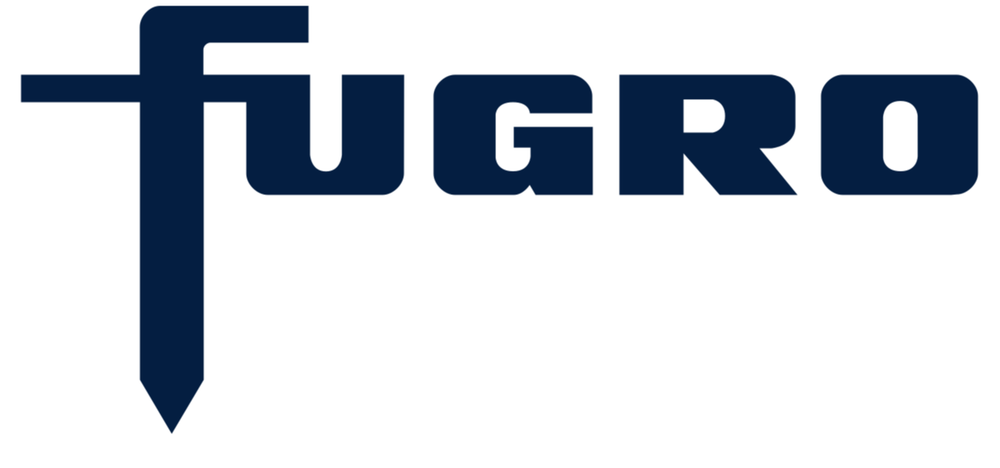

Direction from data.
Enterprise data strategy, governance, and AI roadmaps that turn ambition into clear investment decisions.
Strategy & advisoryI’m Ullas. I connect business strategy, data, and AI to help ambitious organisations move forward.
Explore my work
From the first question to the working solution. I bring the business perspective and the technical depth to connect them.
Enterprise data strategy, governance, and AI roadmaps that turn ambition into clear investment decisions.
Strategy & advisoryData platforms, predictive analytics, and agentic AI. Built around real operational needs.
Platforms & AIConnecting executives, engineers, and analysts to move complex transformation programmes forward.
Leadership & deliveryA selection of work across enterprise AI, data platforms, and critical infrastructure.
An agentic AI prototype exploring multi-step reasoning, tool use, and enterprise data integration.
Developing a prototype within Accenture’s Supply Chain & Engineering community, focused on how AI agents can support operational use cases. This work is exploratory and remains a prototype.
A modern data platform connecting asset management and advanced analytics for a European TSO.
Designed and delivered a platform supporting data-driven prioritisation, performance management, and capital allocation across more than 3 million critical infrastructure assets.
Automated Python quality-control workflows for large sensor datasets and infrastructure inspections.
Engineered automated data quality pipelines that reduced manual validation time by 70%, enabling faster and more reliable delivery on critical infrastructure inspection projects.
Predictive models and forecasting embedded in operational reporting for infrastructure maintenance.
Translated statistical outputs into decision-ready insight for engineering and executive stakeholders, supporting maintenance prioritisation and forecasting.
Python and machine learning pipelines that scaled data processing capacity 3×.
Developed pipelines with pandas, NumPy, and scikit-learn for high-volume sensor and spatial datasets, applying regression, classification, and clustering to infrastructure data.
Project descriptions reflect my contributions. Client names and confidential details are omitted.
I’m a Strategy Consultant at Accenture in Amsterdam, working at the intersection of business ambition and technical possibility.
My path started in Earth Sciences at TU Delft, took me into geospatial analytics at Fugro, and led to enterprise data and AI transformation. That mix shapes how I work: understand the whole system, ask better questions, and build something useful.
Today, I work with C-level stakeholders and multidisciplinary teams on data strategy, AI roadmaps, and transformation programmes.
Explore my experienceHave an interesting challenge, an idea,
or a different perspective? I’d love to hear it.